ЗАДНЕЕ СИДЕНЬЕ № 1 В СБОРЕ (для моделей с опускаемым сиденьем раздельного типа 60/40 с левой стороны) > РАЗБОРКА |
| 1. СНИМИТЕ ОТКИДНУЮ КРЫШКУ ЛЕВОГО ЗАДНЕГО СИДЕНЬЯ |
| 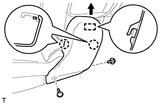 |
Выверните 2 винта.
С помощью съемника молдингов отцепите 2 захвата.
Переместите крышку в направлении, указанном на рисунке стрелкой, чтобы освободить направляющую, и снимите крышку.
| 2. СНИМИТЕ ОТКИДНУЮ КРЫШКУ ПРАВОГО ЗАДНЕГО СИДЕНЬЯ № 1 |
| 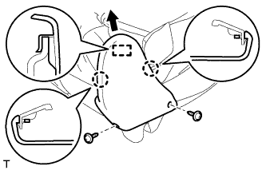 |
Выверните 2 винта.
С помощью съемника молдингов отцепите 2 захвата.
Переместите крышку в направлении, указанном на рисунке стрелкой, чтобы освободить направляющую.
 |
Освободите 2 крепления и снимите крышку.
| 3. СНИМИТЕ ПОДУШКУ ЗАДНЕГО СИДЕНЬЯ № 2 |
 |
Выверните винт и снимите подушку.
| 4. СНИМИТЕ ЛЕВУЮ ВНУТРЕННЮЮ КРЫШКУ ЗАДНЕГО РЕГУЛЯТОРА НАКЛОНА |
 |
Выверните 2 винта.
Отцепите 2 захвата и снимите крышку.
| 5. СНИМИТЕ ШТИФТ РЫЧАГА ОТПИРАНИЯ НАПРАВЛЯЮЩЕЙ СИДЕНЬЯ В СБОРЕ |
 |
С помощью отвертки снимите фиксатор.
Снимите штифт, как показано на рисунке.
| 6. СНИМИТЕ НАПРАВЛЯЮЩУЮ ШТИФТА ПЕТЛИ ЗАДНЕГО СИДЕНЬЯ |
 |
Освободите 4 захвата и снимите направляющую штифта.
| 7. СНИМИТЕ ПЕТЛЮ ЛЕВОГО ЗАДНЕГО СИДЕНЬЯ В СБОРЕ |
 |
С помощью отвертки снимите разрезное уплотнение.
| 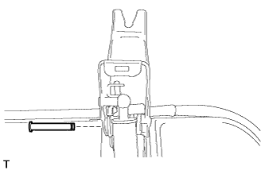 |
Снимите штифт.
 |
С помощью отвертки расцепите 10 захватов.
 |
Выверните 5 винтов.
Отсоедините ручку отпускания регулятора наклона от нижней крышки.
Поднимите нижнюю крышку.
| 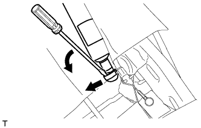 |
С помощью отвертки снимите пружину шарового шарнира стойки сиденья.
Отсоедините стойку сиденья от рамы подушки сиденья.
Снимите петлю сиденья и стойку сиденья как единый узел.
| 8. СНИМИТЕ СТОЙКУ ЗАДНЕГО СИДЕНЬЯ В СБОРЕ |
| 9. СНИМИТЕ ПЕТЛЮ ПРАВОГО ЗАДНЕГО СИДЕНЬЯ В СБОРЕ |
 |
С помощью отвертки снимите разрезное уплотнение.
 |
Снимите штифт и петлю.
| 10. СНИМИТЕ КРАЕВОЕ УКРЕПЛЕНИЕ ПОДУШКИ ЗАДНЕГО СИДЕНЬЯ |
 |
Снимите защитный элемент с каркаса подушки.
| 11. СНИМИТЕ ПОДКЛАДКУ ЗАМКА НОЖКИ СКЛАДЫВАЮЩЕГОСЯ СИДЕНЬЯ |
| 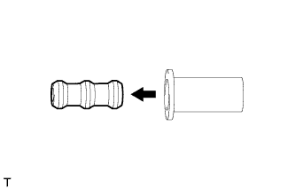 |
Снимите подушку с защитного элемента.
| 12. СНИМИТЕ ОПОРНУЮ ПРУЖИНУ ПОДУШКИ ЗАДНЕГО СИДЕНЬЯ |
 |
Снимите пружину с каркаса подушки сиденья.
| 13. СНИМИТЕ НИЖНЮЮ КРЫШКУ ПОДУШКИ ЛЕВОГО ЗАДНЕГО СИДЕНЬЯ В СБОРЕ |
Снимите нижнюю крышку.
| 14. СНИМИТЕ НАКЛАДКУ ПЕТЛИ ЛЕВОГО ЗАДНЕГО СИДЕНЬЯ № 2 |
 |
Отцепите 3 захвата и снимите обивку.
| 15. СНИМИТЕ НАКЛАДКУ ПРАВОЙ ПЕТЛИ ЗАДНЕГО СИДЕНЬЯ № 2 |
Отцепите 3 захвата и снимите обивку.
| 16. СНИМИТЕ ЗАМОК РЕМНЯ БЕЗОПАСНОСТИ ЗАДНЕГО СИДЕНЬЯ В СБОРЕ |
Отверните болт и снимите замок ремня безопасности.
| 17. СНИМИТЕ ЗАМОК РЕМНЯ БЕЗОПАСНОСТИ ПРАВОГО ЗАДНЕГО СИДЕНЬЯ № 1 В СБОРЕ |
 |
Отверните болт и снимите замок ремня безопасности.
| 18. СНИМИТЕ ОБИВКУ ПОДУШКИ СИДЕНЬЯ ВМЕСТЕ С ПОДУШКОЙ |
 |
Срежьте закрепки и снимите коврик с подушки сиденья.
| *1 | Стяжка |
 |
Снимите витковые пружины и обивку подушки сиденья с подушкой.
| 19. СНИМИТЕ ВНУТРЕННЕЕ КРАЕВОЕ УКРЕПЛЕНИЕ ПОДУШКИ ЛЕВОГО ЗАДНЕГО СИДЕНЬЯ |
Срежьте закрепки и снимите коврик с подушки сиденья.
| *1 | Стяжка |
| 20. СНИМИТЕ ОБИВКУ ПОДУШКИ РАЗДЕЛЬНОГО ЗАДНЕГО СИДЕНЬЯ |
Снимите витковые пружины и обивку подушки сиденья с подушки сиденья.
| 21. СНИМИТЕ ОБИВКУ СПИНКИ ЗАДНЕГО СИДЕНЬЯ |
 |
С помощью отвертки освободите 8 захватов и снимите 2 накладки.
| 22. СНИМИТЕ ПОДУШКУ СПИНКИ ЛЕВОГО СИДЕНЬЯ № 1 |
| 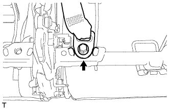 |
Выверните болт и отсоедините ремень безопасности.
 |
Отсоедините крепежную ленту и откройте крышку.
| *1 | Крепежная лента |
 |
Снимите 6 витковых пружин.
 |
Откройте 2 крепления, а затем откройте обивку спинки сиденья.
| 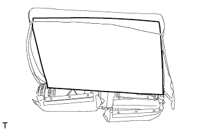 |
Снимите подушку спинки сиденья.
| 23. СНИМИТЕ ВНУТРЕННЮЮ ОТКИДНУЮ КРЫШКУ ПРАВОГО ЗАДНЕГО СИДЕНЬЯ |
| 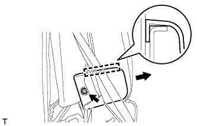 |
Выверните винт.
Отсоедините направляющую и снимите щиток.
| 24. СНИМИТЕ ЦЕНТРАЛЬНЫЙ ПОДЛОКОТНИК ЗАДНЕГО СИДЕНЬЯ В СБОРЕ |
| 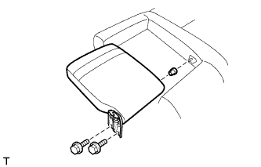 |
Выверните 2 болта и снимите центральный подлокотник и втулку.
| 25. СНИМИТЕ ПЕТЛЮ ЦЕНТРАЛЬНОГО ПОДЛОКОТНИКА ЗАДНЕГО СИДЕНЬЯ |
| 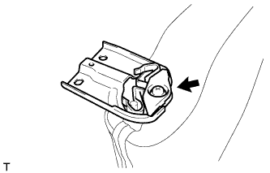 |
Выверните винт и снимите петлю подлокотника.
| 26. СНИМИТЕ ОПОРУ ПОДЛОКОТНИКА ЗАДНЕГО СИДЕНЬЯ |
| 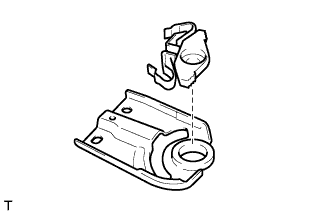 |
Снимите опору подлокотника.
| 27. СНИМИТЕ КРЫШКУ ПЛЕЧЕВОГО КРЕПЛЕНИЯ ПРАВОГО РЕМНЯ БЕЗОПАСНОСТИ |
| 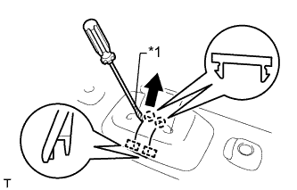 |
С помощью отвертки освободите 2 захвата и 2 направляющих, а затем снимите крышку.
| *1 | Защитная клейкая лента |
| 28. СНИМИТЕ КРЫШКУ ОТВЕРСТИЯ ПЛЕЧЕВОГО КРЕПЛЕНИЯ РЕМНЯ ЛЕВОГО ЗАДНЕГО СИДЕНЬЯ |
 |
Отцепите 4 захвата и снимите обивку.
 |
Отсоедините ремень безопасности.
| 29. СНИМИТЕ КРЫШКУ ЗАЩЕЛКИ ЗАМКА СПИНКИ ЗАДНЕГО СИДЕНЬЯ |
 |
С помощью отвертки расцепите захват и направляющую и снимите крышку.
| *1 | Защитная клейкая лента |
| 30. СНИМИТЕ РЫЧАГ ЗАМКА ЛЕВОГО ЗАДНЕГО СИДЕНЬЯ В СБОРЕ |
 |
Выверните 2 винта.
| 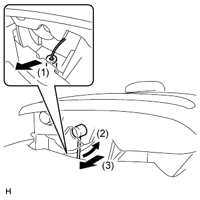 |
Отсоедините трос в порядке, показанном на рисунке, и снимите рычаг.
| 31. СНИМИТЕ ДЕРЖАТЕЛЬ ПОДГОЛОВНИКА ЗАДНЕГО СИДЕНЬЯ № 1 В СБОРЕ |
| 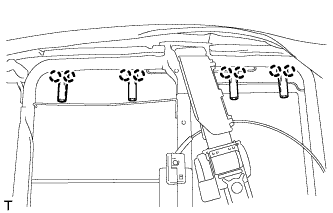 |
Освободите 8 захвата и снимите 4 держателя.
| 32. СНИМИТЕ ОБИВКУ СПИНКИ СИДЕНЬЯ ВМЕСТЕ С ПОДУШКОЙ |
 |
Освободите 2 крепления и снимите обивку спинки сиденья с подушкой.
 |
Отсоедините ремень безопасности от обивки спинки сиденья с подушкой.
| 33. СНИМИТЕ ОБИВКУ СПИНКИ РАЗДЕЛЬНОГО ЗАДНЕГО СИДЕНЬЯ |
Снимите витковые пружины и отсоедините крепежную ленту, а затем снимите обивку спинки сиденья с подушки спинки сиденья.
| *1 | Крепежная лента | - | - |
| 34. СНИМИТЕ ОТКИДНУЮ КРЫШКУ ЛЕВОГО ЗАДНЕГО СИДЕНЬЯ № 1 |
 |
Отцепите 2 захвата и снимите обивку.
| 35. СНИМИТЕ НАКЛАДКУ ЛЕВОГО РЕГУЛЯТОРА НАКЛОНА |
| 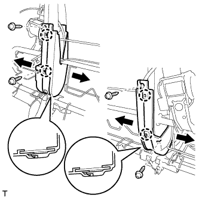 |
Выверните 4 винта.
Отцепите 4 захвата и снимите крышку.
| 36. СНИМИТЕ НАПРАВЛЯЮЩУЮ ПЛЕЧЕВОГО КРЕПЛЕНИЯ РЕМНЯ ЗАДНЕГО СИДЕНЬЯ |
 |
Отсоедините 2 захвата и откройте обивку.
| 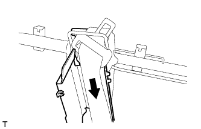 |
Отсоедините ремень безопасности от направляющей ремня.
| 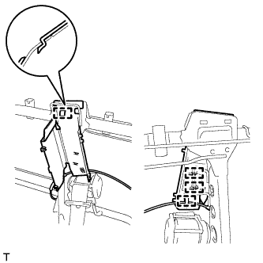 |
Освободите 4 направляющих и снимите направляющую ремня.
| 37. СНИМИТЕ ЛЕВЫЙ 3-ТОЧЕЧНЫЙ РЕМЕНЬ БЕЗОПАСНОСТИ СИДЕНЬЯ № 1 В СБОРЕ |
 |
Отверните 3 гайки и снимите датчик ремня.
 |
Отверните гайку и снимите ремень безопасности.
| 38. СНИМИТЕ ТРОС № 1 ФИКСАЦИИ ЗАДНЕГО СИДЕНЬЯ В СБОРЕ |
| 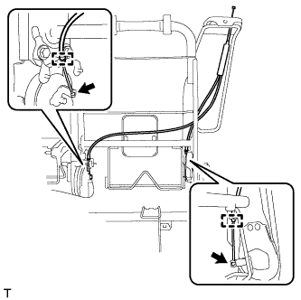 |
Освободите 2 зажима троса, отсоедините трос и снимите его.
| 39. СНИМИТЕ ВНУТРЕННЮЮ ОТКИДНУЮ КРЫШКУ ЛЕВОГО ЗАДНЕГО СИДЕНЬЯ |
 |
Освободите 2 захвата и 2 направляющие, а затем снимите щиток.
| 40. СНИМИТЕ ВНУТРЕННЮЮ ОТКИДНУЮ КРЫШКУ ЛЕВОГО ЗАДНЕГО СИДЕНЬЯ |
| 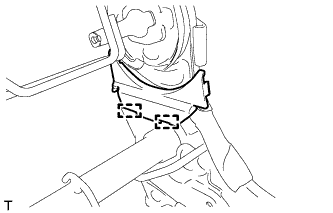 |
Освободите 2 направляющие и снимите крышку.
| 41. СНИМИТЕ ВНУТРЕННЮЮ ОТКИДНУЮ КРЫШКУ ПРАВОГО ЗАДНЕГО СИДЕНЬЯ |
Освободите 2 направляющие и снимите крышку.
| 42. СНИМИТЕ СТОПОРНУЮ ПЛАСТИНУ СПИНКИ СИДЕНЬЯ |
Выверните 3 болта и снимите пластину.
| 43. СНИМИТЕ ВТУЛКУ ЦЕНТРАЛЬНОГО ПОДЛОКОТНИКА ЗАДНЕГО СИДЕНЬЯ |
Освободите 3 захвата и снимите втулку.
| 44. СНИМИТЕ РАМУ СПИНКИ ЛЕВОГО ЗАДНЕГО СИДЕНЬЯ В СБОРЕ |
Выверните 4 болта и снимите кронштейн и раму спинки сиденья.
| 45. СНИМИТЕ ВНУТРЕННИЙ РЕГУЛЯТОР СПИНКИ ЛЕВОГО ЗАДНЕГО СИДЕНЬЯ В СБОРЕ |
 |
Выверните 2 болта и снимите регулятор и крышку.
| 46. СНИМИТЕ СКОБУ ОБВЯЗКИ КРЕПЛЕНИЯ В СБОРЕ |
Выверните болт и снимите кронштейн.
| 47. СНИМИТЕ ТРОС ФИКСАЦИИ ЛЕВОГО СКЛАДЫВАЮЩЕГОСЯ СИДЕНЬЯ № 1 В СБОРЕ |
Обрежьте 2 бандажа жгута проводов.
Освободите 3 зажима троса, отсоедините трос и снимите его.